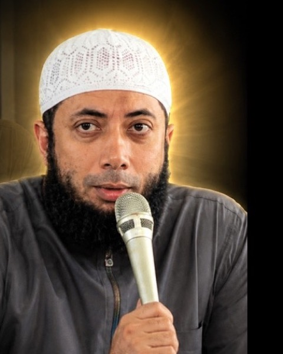
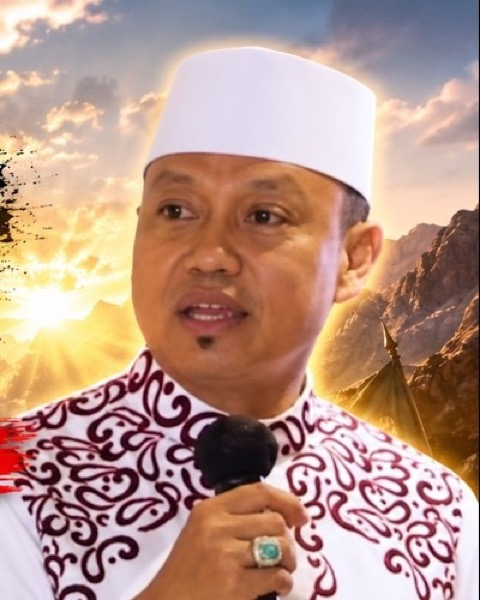
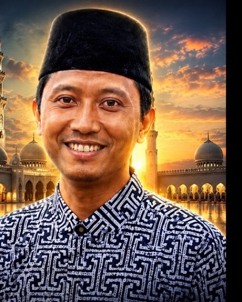

Basic
Rp30.000/bulan
- Lencana member dan emoji khusus SuaraQalbu
- 3 e-book Doa Para Nabi, teks Arab dan terjemah Kemenag
- Rangkuman 1 kajian tiap pekan, dengan link kajian lengkapnya
🌿 Nasihat & kajian singkat
SuaraQalbu menyunting potongan kajian para ustadz menjadi video singkat. Cukup beberapa menit di sela kesibukan, untuk menenangkan dan mengingatkan hati.
 Ust. Abdul Somad
Ust. Abdul Somad
Ust. Khalid Basalamah“Ingatlah, hanya dengan mengingat Allah hati menjadi tenteram.”
QS. Ar-Ra’d [13]: 28
Kajian dari

Ceramah di depan pejabat & aparat
Kajian seputar UAS
Nasihat tentang sholat & lisan
Nasihat dan kajian singkat

Penyejuk jiwa
Nasihat dan motivasi islami
Nasihat dan kajian singkat
Foto diambil dari thumbnail video di channel SuaraQalbu. SuaraQalbu bukan channel resmi para ustadz tersebut.
ٱلَّذِينَ ءَامَنُوا۟ وَتَطْمَئِنُّ قُلُوبُهُم بِذِكْرِ ٱللَّهِ ۗ أَلَا بِذِكْرِ ٱللَّهِ تَطْمَئِنُّ ٱلْقُلُوبُ
“(yaitu) orang-orang yang beriman dan hati mereka menjadi tenteram dengan mengingat Allah. Ingatlah, hanya dengan mengingat Allah hati menjadi tenteram.”
QS. Ar-Ra’d [13]: 28 · Terjemah Kementerian Agama RI
Dukung SuaraQalbu
Setiap video melewati proses memilih kajian, memotong, memberi teks, lalu mengunggah. Dukungan Anda dipakai untuk biaya operasional itu.
Penyuntingan videomemotong & memberi teks
Langganan softwareediting & desain
Penyimpanan & internetunggah rutin setiap hari
Perangkat kerjalaptop & perlengkapan
Tidak wajib. Doa Anda pun sudah sangat berarti 🤲
Semoga Allah membalas setiap kebaikan Anda.
Alamat halaman
saweria.co/suaraQalbu
Perhatikan huruf Q kapital. Alamat ini peka huruf besar-kecil.
Pilihan nominal di Saweria
Atau ketik nominal lain sesuai kemampuan.
Cara bayar
Biaya layanan pembayaran ditampilkan Saweria sebelum Anda membayar. Donasi ini untuk operasional channel SuaraQalbu. Para ustadz tidak mengelola channel ini dan tidak menerima donasi lewat halaman ini.
Langganan member YouTube
Sedang direview YouTube. Dibuka setelah disetujui.
Basic
Rp30.000/bulan
Medium
Rp60.000/bulan
Premium
Koleksi terlengkapRp149.900/bulan
Kajian ustadz tetap gratis untuk semua orang. Yang khusus member hanyalah e-book dan rangkuman yang kami susun sendiri. Link unduhan e-book muncul di halaman benefit member YouTube setelah Anda bergabung.
Isi e-book bersumber jelas. Ayat Al-Qur’an memakai terjemah Kementerian Agama RI, dan doa dari hadits dicantumkan beserta derajatnya. E-book ini susunan SuaraQalbu, bukan materi para ustadz.
Tanya jawab
Tidak. Semua video tetap bisa ditonton gratis. Kalau belum bisa berdonasi, doa Anda pun sudah sangat berarti bagi kami.
Untuk operasional channel: penyuntingan video, langganan software, penyimpanan dan internet, serta perangkat kerja.
Tidak. SuaraQalbu bukan channel resmi para ustadz, dan para ustadz tidak mengelola channel ini. Donasi hanya untuk operasional SuaraQalbu.
Gabung member di YouTube, lalu buka halaman benefit member. Link unduhan e-book tampil di sana sesuai level yang Anda pilih.
Tidak. Kajian para ustadz tetap gratis di YouTube untuk semua orang. Yang khusus member hanya e-book dan rangkuman susunan SuaraQalbu.